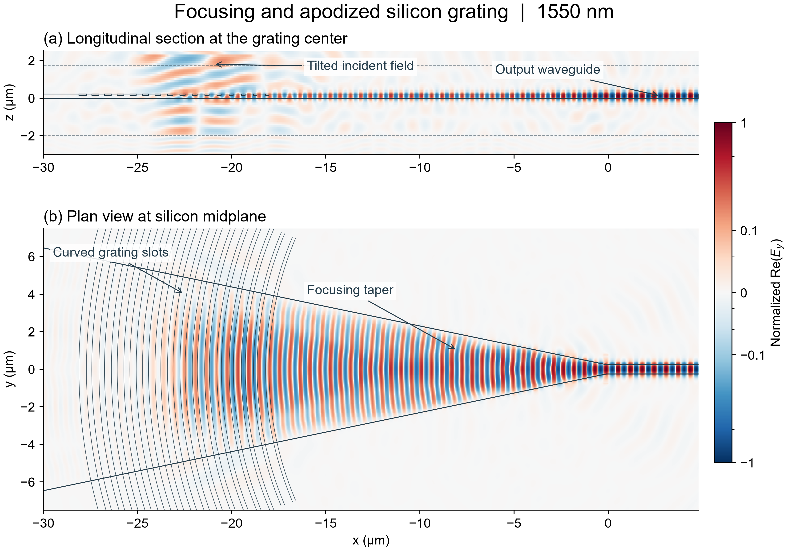
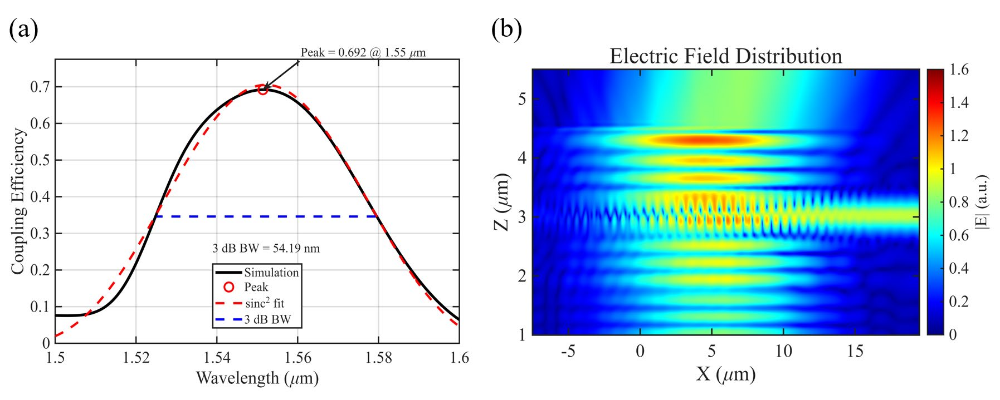
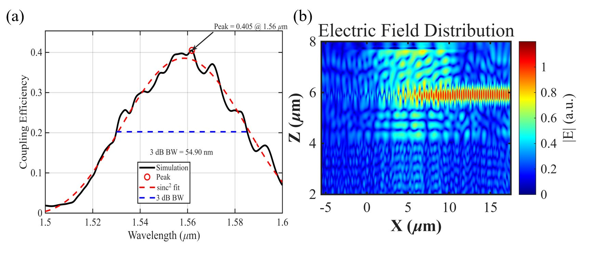
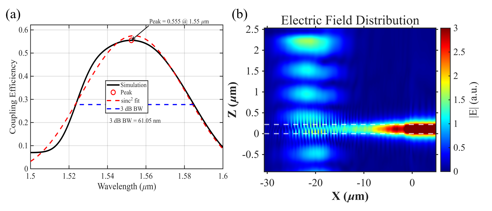
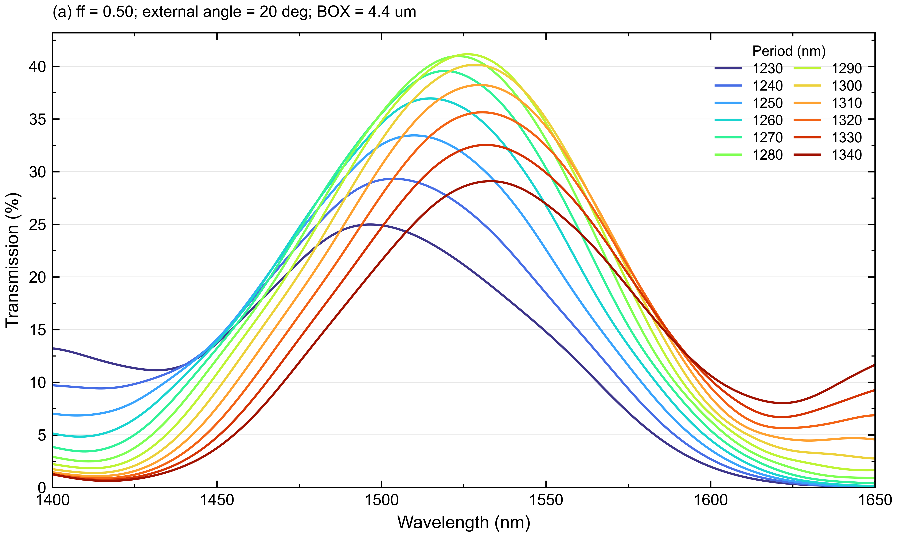
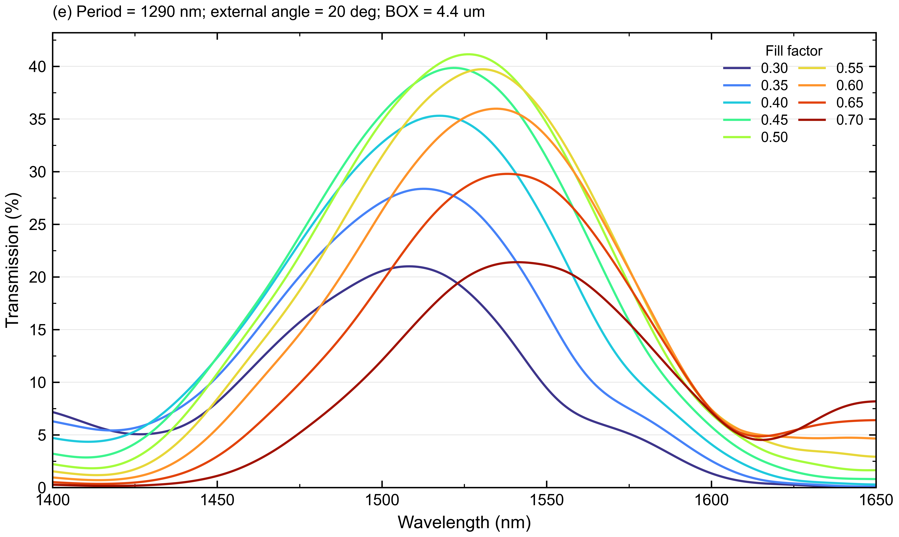
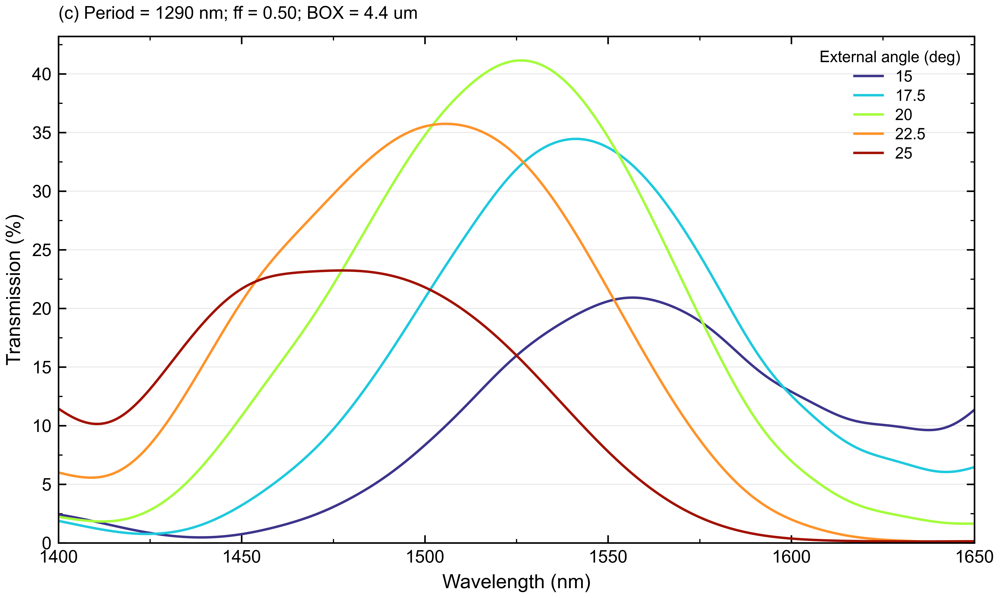
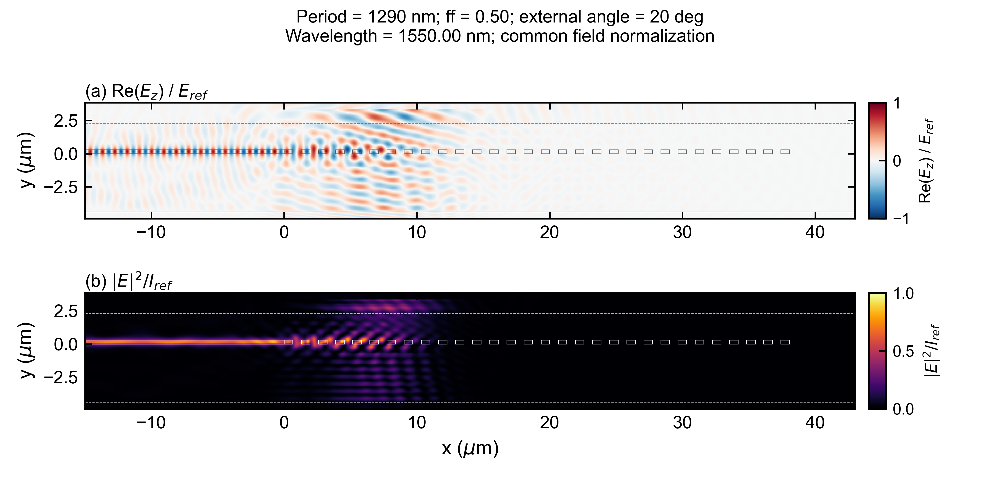
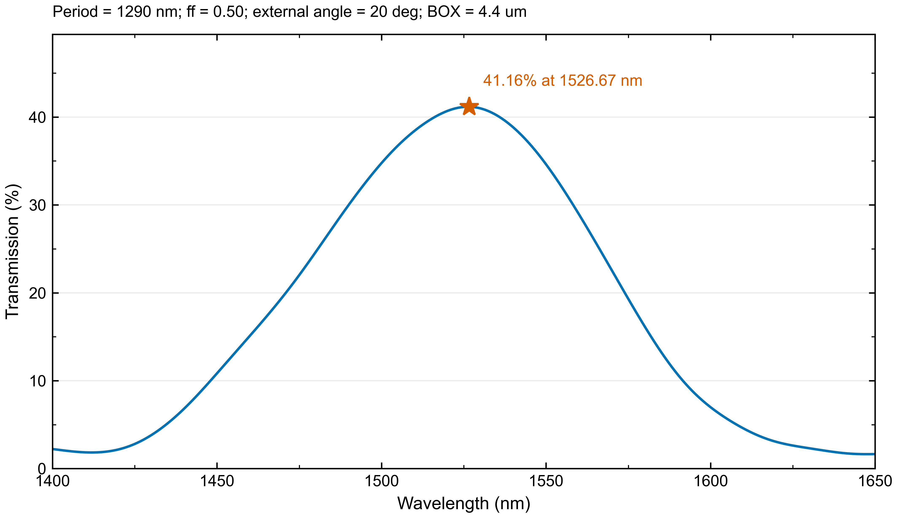

Designing a focusing and apodized silicon grating coupler
I designed a shallow-etched silicon grating to couple 1550 nm light into a 500 nm waveguide. A lower peak and spectral ripple in the 3D straight-grating model motivated a focusing, apodized design.
| Design and purpose | Simulated peak coupling | Peak wavelength |
|---|---|---|
| 2D straight grating to establish a starting geometry | 69.2% | 1550 nm |
| 3D straight grating to test the finite-width device | 40.5% | About 1560 nm |
| 3D focusing and apodized grating to recover coupling near the target | 55.5% | 1550 nm |
Electric field at 1550 nm

What changed when I moved to 3D


The archived straight-grating scripts use 654 nm (2D) and 660 nm (3D) periods.
How I redesigned the grating
I curved the grating to focus light toward the taper and varied the period (635–675 nm) and fill factor (0.72–0.41) to tune phase matching and scattering along the grating. The sixteen slots are etched 80 nm into a 220 nm silicon layer.

Comparison with reported grating couplers
| Coupler | Structure or process | Simulated peak (dB) | Measured peak (dB) | Bandwidth |
|---|---|---|---|---|
| SOI + poly-Si overlay [3] | Deposited overlay | −1.0 | −1.6 | 44 nm (1 dB) |
| SOI + Au bottom reflector [4] | Metal reflector and bonding | −1.1 | −1.6 | 45 nm (1 dB) |
| SiN + DBR [5] | Multilayer reflector | −2.3 | −2.5 | 53 nm (1 dB) |
| SiN + SOI grating reflector [6] | SOI reflector | −2.3 | −1.3 | 80 nm (1 dB) |
| Duty-cycle-apodized SOI [7] | Apodization | — | −3.1 | 41 nm (1 dB) |
| Effective-index-apodized SOI SWG [8] | Subwavelength grating and apodization | −2.0 | −2.2 | 64 nm (3 dB) |
| Dual-etch SOI SWG [9] | Two etch depths | −1.1 | −1.3 | 52 nm (3 dB) |
| Slanted grating [10] | Slanted etch | −1.9 | −3.4 | 80 nm (3 dB) |
| This work | Single shallow etch on SOI, focusing and apodized | −2.56 | — | 61.05 nm (3 dB) |
Values follow Table 1 of the unpublished report. Bracketed numbers follow its reference list. Bandwidths are reported at the drop listed in each row.
Silicon nitride grating coupler
Moving from silicon to SiN changed both the layer and the grating. I switched from a 220 nm silicon layer with an 80 nm partial etch to a 300 nm SiN layer with a full etch. The lower effective index called for a longer period at the same target wavelength and external incidence angle.
The FDTD model uses a 4.4 µm buried oxide. Layer-stack schematic

I estimated the pitch using first-order phase matching. For the external angle in air, the grating index can be approximated by a fill-factor-weighted average of the tooth and slot indices.
At \(\lambda_0=1550\,\mathrm{nm}\), \(\theta=20^\circ\), and \(f=0.50\), the SiN slab-mode and silica indices give \(n_{\mathrm{eff,GC}}\approx1.56\). The estimate moves the pitch from roughly 660 nm for silicon to 1272 nm for SiN. The 2D FDTD sweep selects 1290 nm.
Period, fill factor and incidence angle



Field and spectral verification

